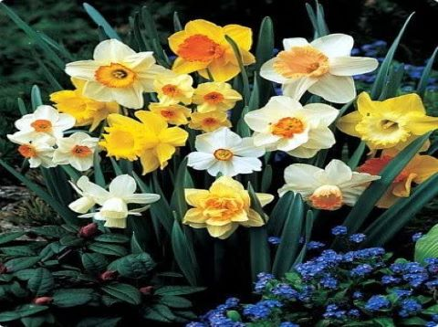

Crisantemos
La belleza hecha flor.
Geranios
Rojo pasion en sus flores.

Narcisos
Colores vivos y frescos
Este es un proyecto que busca ayudar a aquellos que desean reinventar sus espacios para darles un toque mas verde, mas unico. En un mundo donde las ciudades - cemento estan en pleno avance y la naturaleza se hace mas extraña a nosotros es necesario fomentar estos mini espacios de que dan un respiro-
La belleza hecha flor.
Rojo pasion en sus flores.
Colores vivos y frescos
Tucumano de 31 años, apasionado por el teatro, la programacion y la jardineria.
Gato raza callejero cordobes, 2 años. Su hobby es ver por la ventana todo el dia.